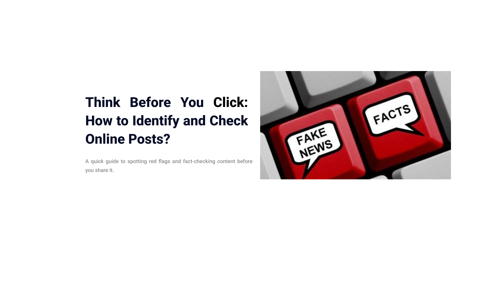

Content Overview
- Module 1 – Define misinformation and disinformation
- Module 2 – Identify red flags in misleading posts
- Module 3 – Use tools to verify content
- Module 4 – Evaluate credibility with a checklist
A quick guide to spotting red flags and fact-checking content before you share it.
 Start with Pre-TestTake this short pre-test before beginning the modules.
Continue to Module 1Misinformation is false or inaccurate information shared without intent to deceive.
Disinformation is false information shared with the intent to mislead.

Identify signs of misinformation like clickbait headlines, poor sources, and emotional tone.

Use reverse image search and fact-checking websites to verify content.

Use this checklist to evaluate online content before sharing: